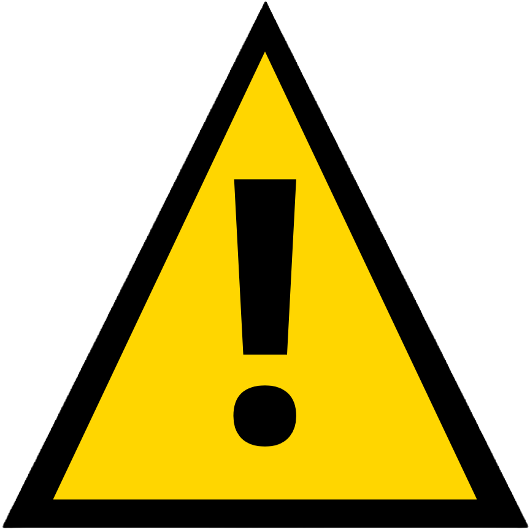
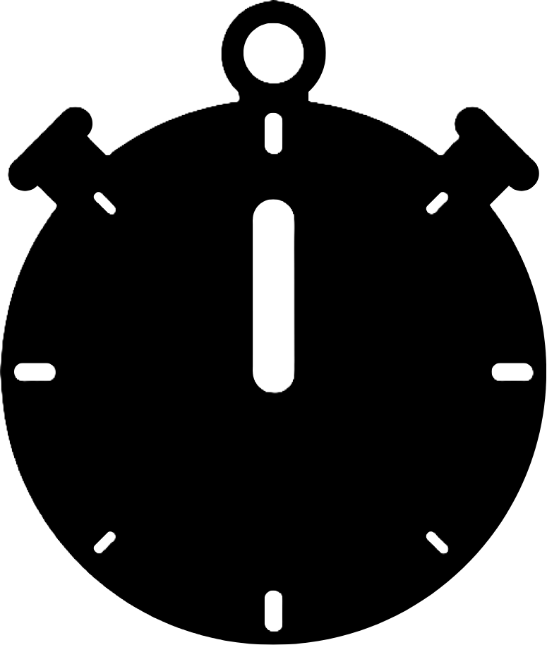

<main>
  <div id="game-container"
      [ngStyle]="{
          'grid-template-rows': 'repeat(' + board.getRows + ', 1fr)',
          'grid-template-columns': 'repeat(' + board.getColumns + ', 1fr)'
      }">
    <div *ngFor="let field of board.getFields"
        class="button-container"
        [ngClass]="field.isOpen ? containerButtonClass(field) : 'close-button-container'"
        [style.gridRow]="field.getRow"
        [style.gridColumn]="field.getColumn">
      <button class="button"
            [ngClass]="field.isOpen ? buttonClass(field) : 'close-button'"
            (click)="openField(field.getRow, field.getColumn)"
            (contextmenu)="toggleFlaged($event, field)">
        
        
        <span *ngIf="field.isOpen && !field.isMined"
              [style.color]="spanColor(field)">
          {{ field.minesAround() }}
        </span>
      </button>
    </div>
  </div>

  <mat-divider></mat-divider>

  <!-- Game informations: Number of bombs and time -->
  <div id="game-info">

    <!-- Number of bombs -->
    <article class="info">
      
      <span> = {{ board.bombCounter() }}</span>
    </article>

    <!-- Time -->
    <article class="info">
      
      <span>{{ getMinutes() + ':' + getSeconds() }}</span>
    </article>
  </div>
</main>
